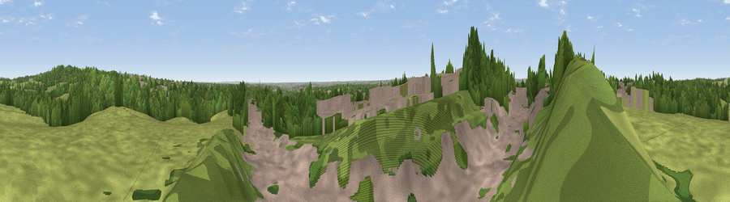

Viewpoint near Great Barr
#35870 in England · top 73% of its area beats it · near Great BarrWhere it is
The exact computed spot (SP 04875 95075). Click the marker for map links.
The view, rendered

A 360° render of this exact spot computed from the terrain model, tree cover and land cover — summer colours, afternoon light, calibrated against photographs of famous viewpoints. Real trees, hedges and buildings will differ in detail.
The panorama
Grey silhouette: terrain skyline in each direction (720 bearings, Earth curvature and refraction included). Dashed green: skyline with trees (+15 m) and buildings (+8 m) as obstacles. Blue strip: how far the ground is visible on each bearing.
Where the view opens
Wedge length = distance to the farthest visible ground on that bearing (vegetation-aware). Rings at 10, 25 and 50 km.
What fills the view
37% woodland · 34% grassland · 29% built-up
Angular shares of the visible panorama (visual magnitude), not map area. Landscape diversity 0.49 (0–1 Shannon).
Key numbers
More beautiful places nearby
The staircase of upgrades: each row has a higher view potential than everything closer. Driving times are estimates from straight-line distance, calibrated against real road routing — check an actual route before setting out.
| Place | Direction | Drive | Score |
|---|---|---|---|
| Viewpoint near Great Barr | NE · 2 km | ~5 min | 51.1 |
| Viewpoint near Great Barr | NNE · 2 km | ~6 min | 61.9 |
| Viewpoint near Streetly | NNE · 3 km | ~7 min | 69.5 |
| Viewpoint near Clent | SW · 18 km | ~32 min | 73.8 |
| Viewpoint near Clent | SW · 19 km | ~32 min | 74.3 |
| Knowle Hill | WSW · 38 km | ~57 min | 75.5 |
| Viewpoint near Abberley | SW · 40 km | ~59 min | 77.5 |
| Viewpoint near Abberley | SW · 41 km | ~60 min | 78.1 |
52.55350, -1.92953 · source: screening · position refined by local search. Computed location — check access rights before visiting.